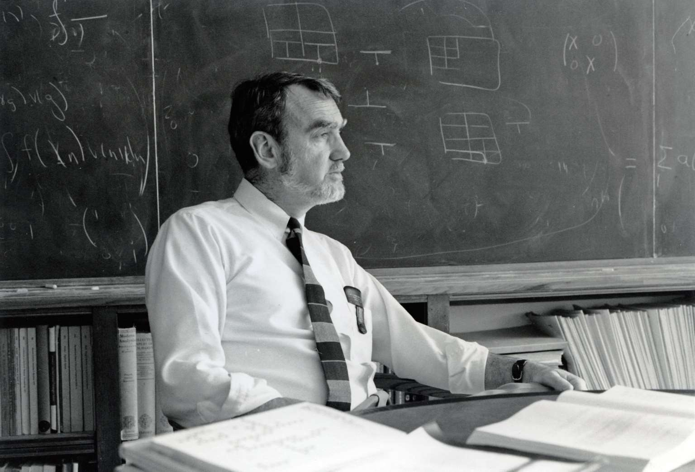
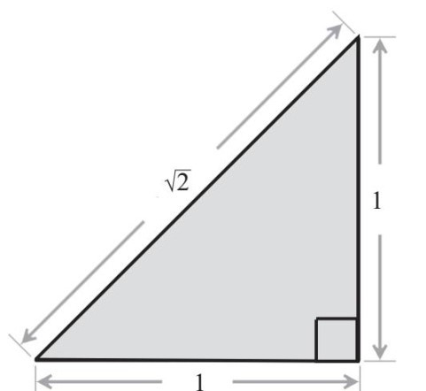
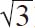
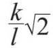
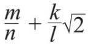
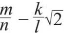
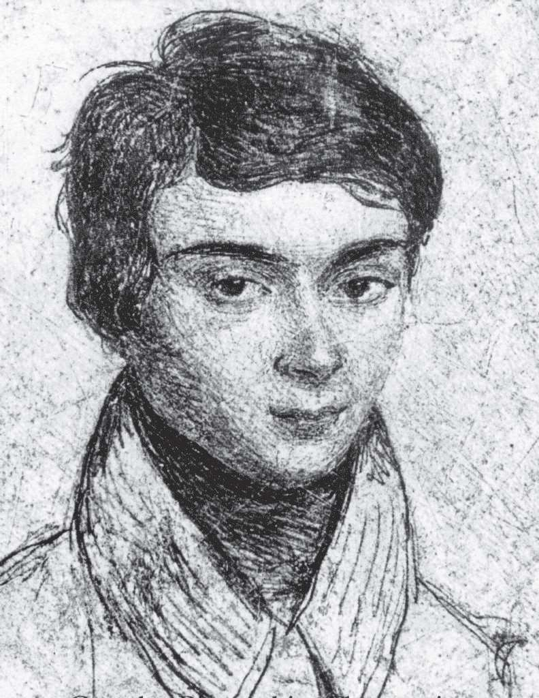

。但是，我们可以用保留了小数点后的几位数字的小数来表现的近似值，例如，1.4142，1.41421，1.414213，等等。但是，无论我们保留小数点后的多少位数字，这些小数仍然是近似值，后面仍然有更多的数字没有写出来。有限小数无法准确表示的值。
。但是，我们可以用保留了小数点后的几位数字的小数来表现的近似值，例如，1.4142，1.41421，1.414213，等等。但是，无论我们保留小数点后的多少位数字，这些小数仍然是近似值，后面仍然有更多的数字没有写出来。有限小数无法准确表示的值。第一次独立解决数学难题的成功经历，具有强大的诱惑力，它引导我正式步入了数学殿堂。不过，我与朗兰兹纲领的接触，则纯属无心插柳。当时，我在富克斯的指导下正在研究我的第二个数学课题，出于研究的需要，我开始钻研这个50年以来最深奥、最令人兴奋的数学理论。后文会谈及我所从事的这项研究，但是本书的写作目的远非介绍我的研究历程，而是要让大家了解现代数学，了解到在数学的世界里，独创性、想象力以及洞察力俯拾即是。朗兰兹纲领就是极为典型的例子。我认为，朗兰兹纲领是数学中的大统一理论，它揭示了数学不同领域的共同规律，把世人的目光聚焦于此，进而深入探究各领域之间不为人知的联系。
数学包含众多分支领域，它们仿佛一块块彼此隔绝的大陆，而人们择善而居，埋头从事各自的研究。这种情形恰恰是“统一”理念大放异彩的原因所在。“统一”理念之所以成形，是因为人们认识到自不同领域中衍生出来的各种理论之间其实有着一脉相承的关系，于是人们把这些理论融合到一起。有了“统一”的理念，我们便如同掌握了另一门语言——一门我们一直在努力学习却收效甚微的语言。
总体来看，数学与大型拼图游戏颇为相似，人们都无法预知它们的结果。不过，数学研究却吸引了数以千计的人为之努力。研究者们分帮结派，各自为政。一些人在研究代数学，一些人在钻研数论，还有一些人在苦苦思考几何问题，不一而足。这些人都在努力完成自己的那部分“拼图”，因此建起了一个个“小岛”。但是纵观整个数学史，在大部分时间里人们无法看出这些小岛之间存在何种关系。大多数人都在研究如何拓展这一个个“小岛”，不过，偶尔也会有人别出心裁地把几个小岛连接起来。此时，数学王国概貌的一些重要表征就会呈现在人们眼前，为各个分支领域注入新的意义。
罗伯特·朗兰兹的贡献就属此类，不过，他的志向远比连接几个小岛更加远大。他于20世纪60年代后期提出朗兰兹纲领，他的目标是寻求一种方法，帮助人们在众多小岛之间（即便它们之间看似毫无关联），架起连接彼此的桥梁。

1999年，罗伯特·朗兰兹在普林斯顿大学办公室内。图片来源：杰夫·莫佐奇（Jeff Mozzochi）
朗兰兹现在是从普林斯顿高等研究院退休的荣誉数学教授，他使用的是阿尔伯特·爱因斯坦曾经使用的办公室。这位高瞻远瞩的伟大天才生于1936年，他的父母经营了一家木制品厂，他在温哥华附近的一个小镇度过了童年时光。朗兰兹令世人瞩目的特点之一是他的语言天赋，在上大学之前，他只会说英语，但后来却熟练地掌握了法语、德语、俄语和土耳其语等多种语言。
前些年，我有幸与朗兰兹开展了紧密合作。我们经常用俄语通信，有一次，他给我发了个名单，列出了他读过的俄语原版书的作者。这份名单非常长，看来他读过的俄文书籍比我这个俄罗斯人还多。我常想，朗兰兹超凡的语言能力，是否与他那种可以将不同分支数学知识融会贯通的能力有关呢？
* * *
朗兰兹纲领的关键点是我们熟悉的对称概念。我们在前文中讨论了几何中的对称问题，例如，任意角度的旋转都是圆桌的对称操作。通过研究这些对称操作，我们认识了群。随后，我们发现群在数学研究中被披上了各种外衣，变成旋转群、辫群等。我们还发现，群在为基本粒子分类以及预测夸克存在等活动中，也发挥了重要作用。朗兰兹纲领涉及的群还出现在“数字研究”（study of numbers）当中。
要弄清楚这方面的内容，我们首先要讨论我们在日常生活中经常遇到的数字。我们都出生于某个特定年份，我们的家门上都有一个特定的门牌号，我们都有电话号码，在ATM（自动柜员机）上进行存取款操作时都需要输入密码，等等。所有这些数字都有一个共同特征：每个数字都可以通过数字1自加若干次得到，例如，1+1得到2，1+1+1得到3，如此等等。这些数字叫作自然数。
此外，我们还有数字0，还有负数–1，–2，–3，…。我们在第5章讨论过，这些数字统称为“整数”。所以，一个整数可能是一个自然数，可能是数字0，也可能是一个负数。
我们还会遇到一些使用频率比整数稍高的数字。以美元和美分为单位的商品价格，常采用2.59美元这样的表达方式，意即2美元59美分。这个数字等同于2加上分数59/100，或者2加上1/100的59倍。1/100自加100次后可得到1，这类数字叫作有理数或分数。
1/4这个概念可以很好地表明有理数的特征，1/4的数学表现形式是分数1/4。一般说来，对于任意两个整数m和n，都可以构成分数m/n。如果m和n有一个公约数，比如d（也就是说，m=dm'，n=dn'），那么我们可以让m和n都除以d，把m/n写成m'/n'。例如，1/4也可以表示成25/100，因此美国人说1/4美元就是25美分。
我们在日常生活中遇到的大多数数字都是分数，即有理数。但是，还有些数不属于有理数，例如2的平方根。我们把这个数字写成2的形式，2的平方等于2。在几何中，2是两条直角边长度为1的直角三角形的斜边长度。

研究表明，我们不能用m/n（其中m、n是自然数）的形式来表现。但是，我们可以用保留了小数点后的几位数字的小数来表现的近似值，例如，1.4142，1.41421，1.414213，等等。但是，无论我们保留小数点后的多少位数字，这些小数仍然是近似值，后面仍然有更多的数字没有写出来。有限小数无法准确表示的值。
由于代表了上图中直角三角形斜边的长度，因此我们可以确定这个数字确实存在，只不过它无法通过有理数这套数字系统表现出来。
这样的数非常多，例如

或者2的立方根。我们需要找出一种系统性的方法，既能表示有理数，还能表示上述这些数字。我们把有理数看作一杯茶，在喝这杯茶时我们可以什么都不加，但是如果我们在其中加入糖、奶、蜂蜜等，喝茶体验到的美妙感觉就会得到提升。把、等数字和有理数放到一起，就像把糖一类的调味品加到茶中一样。
我们以为例，在有理数中加入的操作，就像在我们的茶中放入一块方糖。接下来，我们来研究这套新的数字系统。我们肯定希望这套系统中的数字可以进行乘法运算，所以该数字系统必须包含所有有理数与的乘积，其表现形式为

。因此，这套数字系统必须包含所有分数n/m（有理数）和所有具有这种形式的数字。此外，我们还希望这些数字可以彼此相加，所以该数字系统还应该包括两数之和：
于是，具有这种形式的所有数字就可以满足我们的需要了，也就是说，我们可以对其进行所有的常见运算（加、减、乘、除），而且运算结果仍然是这种形式的数字。
研究发现，这套数字系统拥有一个有理数不具备的属性——对称操作。这个属性将成为我们进入这套数字系统所在的神秘世界的大门。
这里的“对称”是指利用一个新的数字为已有的任意数字赋值的规则。换句话说，我们可以利用一个已知的对称操作，把每一个数字转变成同一数字系统中的另一个数字。因此，所谓对称，就是把每一个数字“变成”其他数字的规则，而且该规则应当与加、减、乘、除等运算兼容。现在，我们尚不清楚为什么必须关注数字系统的对称性，但请大家耐心听我解释。
这套数字系统有“恒等对称”（identity symmetry）的规则，即经过操作后每个数字保持不变。该操作就像桌子的0度旋转，在这种情况下桌子上所有点的位置都保持不变。
研究还发现，我们这个数字系统也拥有“非凡对称”（non-trivial symmetry）的规则。我们仍以为例，是方程式x2=2的解。的确，当x=时，方程式平衡。但是，该方程式事实上有两个解：一个解是，另一个解是–。在以有理数为基础构建这个新的数字系统时，我们把这两个数字都添加进去了。两个解相互转变，构成这套数字系统的一个对称操作。
为了解释得更充分一些，我们还是用喝茶来做类比，不过需要稍微调整一下。假设在茶水中放入一块白糖和一块红糖，然后搅拌均匀。白糖代表，红糖代表–，显然，若白糖与红糖互换，对茶的口感不会有任何影响。
在互换过程中，有理数保持不变。因此，这种形式的数字将会转变成数字

。换句话说，只需改变2前面的符号，其余部分保持不变。大家可以看出来，这套新的数字系统与蝴蝶的特点十分相似：表示蝴蝶的大小，而和–互换的对称操作则相当于蝴蝶两只翅膀的对称性。
我们可以进一步延伸，从x2=2转而考虑变量x的其他方程式，例如三次方程式x3–x+1=0。如果此类方程式的根不是有理数（比如上述方程式就属于此类情况），我们就可以把这些根添加到有理数中，我们还可以让几个类似方程式的所有根同时添加到有理数中。这样，我们就可以得到数学家所谓的“数域”（number field）。“域”（field）表示在某一数字系统内对数字进行加、减、乘、除等运算时，该数字系统是“封闭的”（closed）。
与上述通过对有理数添加得到的数域一样，一般数域都拥有兼容加、减、乘、除等运算的对称操作。同几何体一样，给定数域的对称操作也可以相互结合。因此，这些对称操作自然而然就可以构成群。该群被命名为数域的“伽罗瓦群”（Galois group），以此向法国数学家埃瓦里斯特·伽罗瓦（Evariste Galois，见下图）致敬。

伽罗瓦的故事是有史以来最浪漫也最传奇的数学故事之一。伽罗瓦是一个天才儿童，在很小的时候就取得了一些突破性发现。1832年5月31日，20岁的伽罗瓦死于一场决斗。关于这场决斗的原因众说纷纭，有人认为这跟一位女士有关，有人说这跟他参加的政治活动有关。的确，伽罗瓦敢于表达自己的政治观点，他在自己的短暂人生中确实让不少人寝食难安。
就在他殒命的前夜，伽罗瓦还就着微弱的烛光奋笔疾书，一直到深夜，完成了他的手稿。这份手稿概括性地介绍了他对数字对称性的一些想法，向世人展示出他的一些光芒四射的发现。这实际上是他写给全人类的一封情书。的确，伽罗瓦发现的对称群堪称人类创造的奇观，其意义与埃及金字塔或者古巴比伦空中花园相比也毫不逊色，唯一的区别在于我们无须跨越时空就可以领略其中的美感——无论我们身在何处，伽罗瓦群都触手可及。而且，伽罗瓦群的意义并不仅限于它们那令人神魂颠倒的美感，更在于其巨大的实际应用价值。为纪念他的杰出贡献，这些群被冠以这位数学家的名字。
令人惊叹的是，伽罗瓦远远走在了同时代人的前面。他的想法如此激进，以至于同时代的人根本无法理解。法国科学院两次拒绝发表他的论文，直到大概50年以后，数学家们才认识到它的意义，他的研究成果终于得以出版。当今数学界认为他的这些成果是现代数学的基石。
伽罗瓦做出的贡献，是把我们在几何学中通过直觉认识的对称概念，转变为数论研究中的重要问题，让人们看到了对称的显著作用。
而在伽罗瓦之前，数学家们研究的核心问题则是对x2=2及x3–x+1=0等多项方程式求解，并找出确定的公式。遗憾的是，在伽罗瓦去世已接近两个世纪的今天，学校里教授的数学课程仍然是这些内容。例如，老师要求我们记住二次方程式的通用表达式：
ax2+bx+c=0
至于由系数a、b、c构成的求根公式，我不想写出来，以免勾起我不愉快的回忆。在这里，我们只需要知道一点：使用该求根公式需要计算平方根。
ax3+bx2+cx+d=0
同样，以上的三次方程式也有一个由系数a、b、c、d构成的求根公式，该公式与二次方程式的求根公式形式相似但更为复杂，需要计算三次方根。通过根式（即二次方根、三次方根等）求解多项方程式的做法，随着方程式的次数增加，其求根公式的复杂程度也会显著增加。
早在公元9世纪时，波斯数学家阿尔·花剌子模（Al-Khwarizmi）就已经知道二次方程式的一般求根公式了。“代数”（algebra）这个名称就来自于花剌子模的一本著作，该词的原型是书名中的“al-jabr”一词。16世纪上半叶，人们发现了三次方程式和四次方程式的求根公式。随后，人们很自然地把下一个目标定在找出五次方程式的求根公式上。在伽罗瓦之前，众多数学家都迫切地希望找到五次方程式的求根公式，他们寻觅了近300年，却毫无头绪。而伽罗瓦却发现，这些数学家们没有找到问题的根源所在。他说，把该方程式的根添加到有理数中，就可以得到一个数域，因此，我们的重点应该是研究该数域的对称群——伽罗瓦群。
事实证明，描述伽罗瓦群比写出求根公式要容易得多。无须知道方程的根，我们也能知道有关该群的一些有价值的内容，并据此推断出根的一些重要特征。事实上，伽罗瓦成功地证明，当且仅当相应的伽罗瓦群具有某个特别简单的结构（现代数学家称之为“可解群”）时，以根式（即平方根、立方根等）形式给出的求根公式才存在。对二次方程式、三次方程式和四次方程式而言，伽罗瓦群总是可解群，因此这些方程式的求根公式可以用根式的形式给出。但是，伽罗瓦还证明出典型的五次方程式（或次数更高的方程式）的对称群是不可解的，这意味着这些方程式不存在以根式形式给出的求根公式。
在这里，我不准备给出详细的证明过程，但是我们可以分析几个伽罗瓦群的例子，以便对这些群有所了解。对于方程式x2=2，我们已经描述了其对应的伽罗瓦群。在这种情况下，我们把该方程式的两个根和–添加到有理数中，得到一个数域，该数域的伽罗瓦群包含两个元素：恒等元，以及和–互换的对称操作。
再举一例。对于上文给出的三次方程式，假设其系数都是有理数，但是它的三个根都不是有理数。此时，我们可以把这三个根添加到有理数中，生成一个新的数域。这个过程就好像在茶中添加三种不同的成分，如一块方糖、一些牛奶和一勺蜂蜜。在该数域（添加了上述成分的茶）中的任何对称操作，都不会改变三次方程式，这是因为该方程式的系数都是有理数，在对称操作中保持不变。因此，三次方程式的三个根（茶里的三种成分）必然可以互换。通过观察互换情况，我们可以用三个根的排列组合来描述该数域的伽罗瓦群。该方法的重要意义在于，我们无须任何求根公式，就可以描述伽罗瓦群。
同理，我们也可以把任意多项方程式的所有根（n次多项方程式有n个不同的根，并且不全是有理数）添加到有理数中而生成一个数域，然后用所有根的排列组合，对该数域的伽罗瓦群进行描述。因此，我们无须用系数求出所有根，即可推断出有关该方程式的大量信息。
伽罗瓦的研究充分说明在数学研究当中洞察力的重要作用。伽罗瓦在解决这个问题时，并没有寻找所谓的多项方程式的求根公式，而是将问题层层分解，再重新阐释，采用了迂回包抄、徐徐图之的方法。他看待问题的异乎寻常的方式，以及深邃的洞察力，彻底地改变了人们对数字和方程式的理解。
150年以后，朗兰兹又进一步拓展了这些想法。1967年，朗兰兹提出了一些革命性的见解，将伽罗瓦群理论与“调和分析”（harmonic analysis）这一数学领域结合起来。他的这些观点表明，两个看上去风马牛不相及的领域之间，其实有着紧密的联系。当时30岁出头的朗兰兹在给知名数学家安德烈·韦伊（A n d ré Wei l）的一封信里，论述了自己的这些想法。当时，这封信的复本在数学界广为流传，该信因其谦逊的笔调而备受关注。
韦伊教授，承蒙您邀请面谈，不胜感谢。附件是对本次邀请的回复信，在写完这封回复信之后，我发现信中内容连我自己也不能十分肯定。如果您愿意把它当作我的大胆臆测，且不吝拨冗一读，我将感激不尽。如果您认为这是一派胡言，请直接将它扔进垃圾桶。
书信的附件是一个开创性的理论，它将似乎毫不相干的数学领域连成了一体。自此，朗兰兹纲领诞生了。
好几代数学家前赴后继，奉献出毕生精力，期望能解决朗兰兹提出的这些问题。他们为什么有如此强大的动力呢？